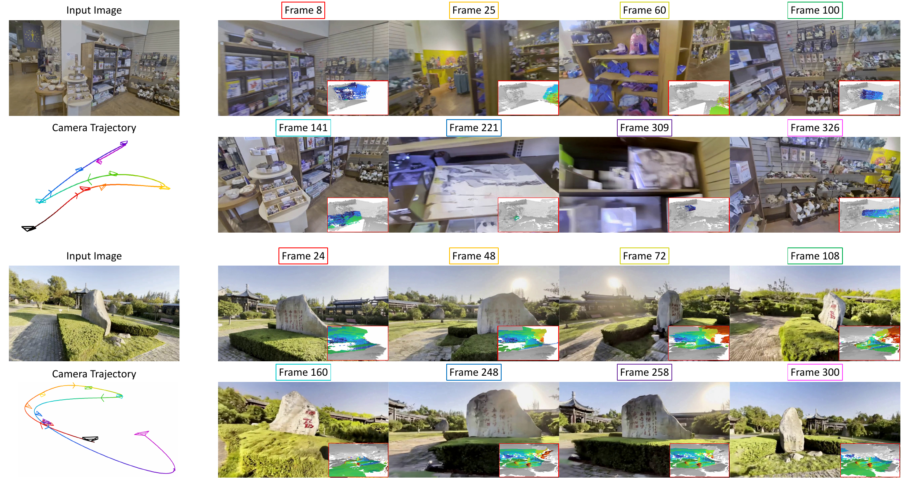
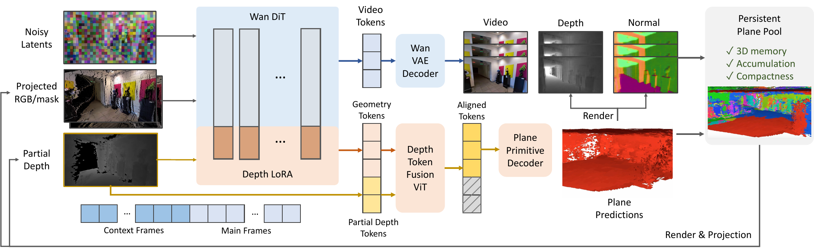
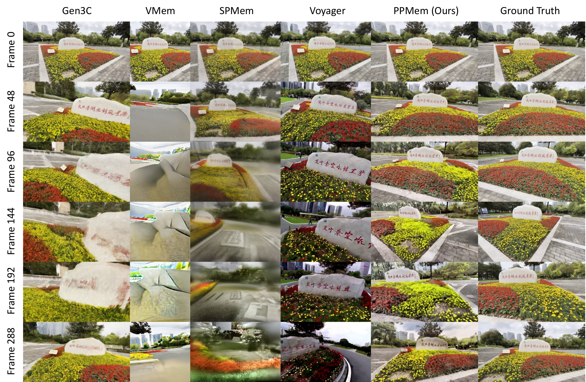

Predict planes
A plane prediction head extracts structured geometry from the video model’s features. Each plane is described by seven parameters.
*Corresponding authors.
NeurIPS 2026
Camera-controlled video generation
with persistent 3D memory.
Four forward–backward visits to the same scene.
Choose Normal or Depth to compare geometry with RGB.
THE IDEA
PPMem generates video from a single image and a camera trajectory, while building a persistent 3D memory from plane primitives.
Walls, floors, facades, and other surfaces become a compact set of oriented planes. As generation proceeds, newly predicted geometry is merged into this memory and rendered from upcoming camera viewpoints to guide subsequent video segments.
Video world models that generate and explore environments at scale need a persistent 3D memory of what they have produced. Plane primitives offer a natural candidate: a compact set of oriented planes captures the dominant structural elements (e.g., walls, floors, facades) of indoor and outdoor scenes, while requiring only 7 parameters per primitive.
We present PPMem, a video world model that adopts plane primitives as its persistent 3D memory. PPMem augments a video diffusion transformer with a planar prediction head and a Depth Token Fusion (DTF) module: each autoregressive chunk jointly produces RGB video and planar geometry, which merges into a persistent plane memory that conditions subsequent chunks via rendered depth. The resulting memory is three orders of magnitude more compact than per-pixel point clouds (~100K primitives, ~5 MB for a full scene), geometrically explicit (metric depth, normals, exportable surfaces), cross-view consistent (jointly predicted by the shared backbone), and adaptive (refined by the merging procedure as generation proceeds). On DL3DV and RealEstate10K, PPMem outperforms prior 3D-grounded world models in video quality while jointly producing metric-scale depth, surface normals, and exportable planar geometry, sustaining coherence across hundreds of frames under large viewpoint changes.

METHOD
Planar geometry connects one video segment to the next.

A plane prediction head extracts structured geometry from the video model’s features. Each plane is described by seven parameters.
New planes are merged with earlier geometry, removing redundant or inconsistent surfaces as the scene expands.
The accumulated memory is rendered at the next camera poses, providing geometric conditioning for subsequent generation.
LONG-CONTEXT GENERATION

VIDEO
From persistent plane memory to repeated visits, rotations, and handheld camera motion.
@article{he2026ppmem,
title = {Persistent Planar Memory for Video World Models},
author = {He, Yuze and Tan, Bin and Gao, Zelin and Shen, Yujun
and Liu, Yong-Jin and Xue, Nan and Xu, Yinghao},
journal = {arXiv preprint arXiv:2609.xxxxx},
year = {2026}
}